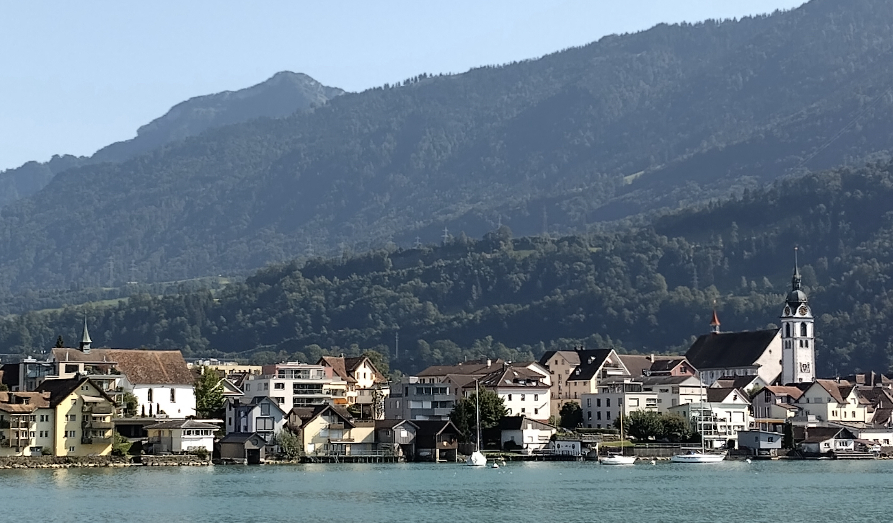
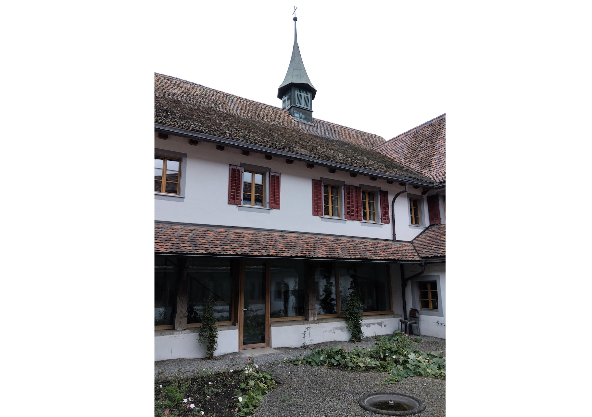

Am Zugersee hört man nicht nur die Schweizer Landessprachen und insbesondere die Dialekte der angrenzenden Kantone – Zuger-, Schwyzer-, Luzernerdeutsch –, sondern wegen der vielen Expats, die hier ihre Freizeit verbringen, und der unzähligen Touristinnen und Touristen, die die Zentralschweiz besuchen, auch immer wieder Hochdeutsch, Englisch, Mandarin, Hindi, Holländisch, Koreanisch, Arabisch. Und man kann, wenn man will, Aramäisch hören – jene Sprache, die vor zweitausend Jahren Jesus Christus gesprochen haben soll (wenn auch zweifellos in einer anderen Variante). Unter anderem deshalb empfiehlt sich ein Besuch im syrisch-orthodoxen Kloster Mor Avgin (Sankt Eugen) am südlichen Ende des Zugersees.
Im Vordergrund links das syrisch-orthodoxe Kloster Mor Avgin, rechts die römisch-katholische Pfarrkirche, im Hintergrund ein Gipfel der Rigi, August 2024. (Foto: David Zimmer)
Vom See aus gesehen liegt das ehemalige Kapuzinerkloster von Arth links der wuchtigen Pfarrkirche Sankt Georg und Zeno etwas unscheinbar inmitten von Wohnhäusern. Auch beim Näherkommen lässt kaum etwas auf die diskrete religiöse Gemeinschaft schliessen, die die barocke Anlage seit 1996 beherbergt. Nur die ungewohnten Schriftzeichen über dem Portalbogen, die augenscheinlich zu einer semitischen Sprache gehören, und der begleitende Schriftzug in deutscher Sprache weisen auf das hier untergebrachte Kloster der Syrisch-Orthodoxen Kirche von Antiochien, einer altorientalischen (oder auch: orientalisch-orthodoxen) Kirche, hin. Die ständige Klostergemeinschaft besteht gegenwärtig aus dem vor Ort ansässigen Erzbischof für die Schweiz und Österreich, zwei Mönchspriestern sowie einer Nonne.
Kirche in der Diaspora
Das syrisch-orthodoxe Christentum im Nahen und Mittleren Osten hat eine
lange, wechselvolle und komplizierte Geschichte, auf die an dieser
Stelle nur kurz eingegangen werden kann. Ursprünglich war die Kirche in
Antiochia (Antakya in der heutigen Türkei) – laut Apostelgeschichte
11,26 der Ort, wo man die Jünger Jesu Christi zum ersten Mal Christen
nannte – sowohl griechisch- als auch aramäischsprachig. Aufgrund
kultureller Unterschiede und christologischer Differenzen spalteten sich
die Christinnen und Christen im Osten des Römischen Reichs im Laufe der
Zeit immer stärker in verschiedene Gemeinschaften, später eigenständige
Kirchen auf.
Diejenigen aramäischsprachigen Christen, die den Beschlüssen des
ökumenischen Konzils von Ephesus (431) folgten, aber die
Zwei-Naturen-Lehre des Konzils von Chalkedon (451) ablehnten, sammelten
sich im 6. Jahrhundert um Jakob Baradaios († 578) in einer
selbständigen, miaphysitischen Kirche, die an der einen, unvermischten
Natur Jesu Christi festhielt. Unter islamischer Herrschaft blühte das
kirchliche und klösterliche Leben im Gebiet zwischen dem Oberlauf des
Euphrat und des Tigris – zumindest zeitweise – auf. Es waren nicht
zuletzt syrisch-orthodoxe Geistliche, die durch ihre Übersetzungen das
antike griechische Erbe an muslimische Gelehrte vermittelten, über die
es schliesslich wieder in den Westen gelangte.
Seit dem ausgehenden 19. Jahrhundert kam es in den angestammten
Siedlungsgebieten der syrisch-orthodoxen Christinnen und Christen zu
wiederholten Massakern, die Zehntausende von Todesopfern forderten und
die Emigration nach Westeuropa und Übersee beschleunigten. Heute ist die
Syrisch-Orthodoxe Kirche von Antiochien, deren Patriarch in Damaskus
residiert, in erster Linie eine Kirche in der Diaspora.
Eucharistiefeier in der Kirche des syrisch-orthodoxen Klosters Mor Avgin, August 2024. (Foto: David Zimmer)
Reiche liturgische Tradition
In der kleinen Klosterkirche in Arth versammeln sich an diesem Sonntag im August mehrere Dutzend Gläubige zum Gottesdienst: die Männer auf der rechten, die Frauen auf der linken Seite, Kinder und Familien auf der Empore. In der ersten Stunde stehen Gebete und Lesungen im Zentrum, welche von mehreren Männern, die hinter einer Chorschranke an zwei flachen Lesepulten stehen, in rhythmischen und zum Teil mehrstimmigen Gesängen auf Aramäisch vorgetragen werden. Die Stimmung ist feierlich, doch alles andere als steif. Die Gläubigen treffen nach und nach ein, zünden vor den barocken Seitenaltären, die nach wie vor dem heiligen Franziskus und Maria geweiht sind, Opferkerzen an und unterhalten sich kurz mit ihren Banknachbarn; die Hymnensänger vorne scherzen gelegentlich miteinander. Man bekreuzigt sich wie in der römisch-katholischen Kirche von links nach rechts. Mehrmals wird Weihrauch ausgebracht. Der einfach bestickte, weinrote Vorhang, der anstelle einer Ikonostase das Kirchenschiff vom Chor trennt, wird auf- und später wieder zugezogen. Nach einer Stunde beginnt die Eucharistiefeier (Göttliche Liturgie) in syrisch-antiochenischem Ritus. Dieser zeichnet sich durch einen grossen liturgischen Reichtum mit achtzig verschiedenen eucharistischen Hochgebeten (Anaphoren) aus. Gefeiert wird die Jakobusliturgie. Die zelebrierenden Priester, (Sub-) Diakone und weiteren Beteiligten stehen dem Volk ab- und dem Altar zugewandt im Chor. Die Priester tragen goldene Umhänge, die anderen Männer weisse Gewänder, meist mit einer prächtig bestickten Stola. Patene und Messkelch stehen auf einer tragbaren hölzernen Altartafel. Die Eucharistiefeier, die auch eine Art Predigt beinhaltet, dauert fünfviertel Stunden. Ganz am Schluss wird dem Volk die Kommunion ausgeteilt. Unmittelbar danach verlassen die Gläubigen die Kirche und treffen sich im Kloster zum geselligen Austausch.
Innenhof des syrisch-orthodoxen Klosters Mor Avgin, August 2024. (Foto: David Zimmer)
Geistiges und kulturelles Zentrum
Die barocke Klosteranlage, die seit 1962 unter nationalem Denkmalschutz
steht, wurde 2009–2012 renoviert und erweitert. Sie besteht aus der
Klosterkirche, dem um einen rechteckigen Innenhof angeordneten
Klostergebäude und einem grossen Klostergarten. Es gibt verschiedene
Gemeinschaftsräume und eine Bibliothek mit rund 8'000 Bänden, bei denen
es sich teilweise um kapuzinische Buchbestände, teilweise um
syrisch-orthodoxe Bücher handelt.
Das Kloster ist das geistige und kulturelle Zentrum der
syrisch-orthodoxen Christinnen und Christen in der Schweiz und darüber
hinaus. So etwa wird Kindern und Jugendlichen am Freitagabend
regelmässig Religionsunterricht erteilt, und jeweils während der
Sommerferien finden Ferienlager mit jungen Teilnehmenden aus ganz Europa
statt. Aramäisch wird dabei nicht nur als Liturgiesprache, sondern –
neben weiteren Sprachen wie etwa Türkisch – auch im Alltag als
gesprochener Dialekt verwendet. Das aramäische, syrisch-orthodoxe Erbe
wird am Zugersee aktiv gepflegt und bleibt auf diese Weise im Exil
lebendig.
David Zimmer ist Alumnus der Universität Freiburg i.Ü.
Weitere Artikel von {{ author.author }} finden Sie hier:
Zur Vertiefung:
- Website des syrisch-orthodoxen Klosters Mor Avgin, verfügbar unter: www.kloster-st-avgin.ch (18.09.2024).
- Jakob Banz, Elena / Kaufmann, Hansjörg: Kloster St. Avgin, Pfäffikon 2013.
- Pinggéra, Karl: «Die Kirchen der syrisch-orthodoxen Tradition», in: Lange, Christian / Pinggéra, Karl (Hgg.): Die altorientalischen Kirchen. Glaube und Geschichte, Darmstadt 2010, 77–88.
- Brock, Sebastian P. / Taylor, David G. K. (Hgg.): The hidden pearl. The Syrian Orthodox Church and its ancient Aramaic heritage. Vol. I–III, Roma 2001.